Meet the Lab
The Louisiana Freshwater Sponge Research Team consists of biology, computer science, and pre-engineering BRCC students. All have individual roles in the projects that come together to create an ongoing database that allows us to understand the health of freshwater sponges in Louisiana!
Undergraduate Research Mentors:

Juliana Coletti
Molecular, Summer 2024 -
“Hello! My name is Juliana, and
I’m currently majoring in Biological Sciences. Once I complete the
Associate of Science Transfer degree at BRCC, I plan to transfer to LSU
for a Bachelor of Science in Natural Resource Ecology and Management. My
goal is to pursue a career in habitat restoration and wildlife ecology.
I then plan to obtain a Master of Science in Renewable Natural Resources
from LSU to help improve and protect ecosystems and their biodiversity.
A fun fact about me is that I love Korean skincare.”

Sarah Darst
Water Quality, Summer 2024 -
“I am Sarah
Darst, a biology major at Baton Rouge Community College (BRCC). After
completing my studies at BRCC, I plan to transfer to Louisiana State
University’s College of the Coast and Environment. There, I’ll pursue
the 3+3 track for environmental law, aiming to obtain a Bachelor of
Science in Coastal Environmental Science and subsequently, a law degree.
Outside of academics, I’m a pet enthusiast with three cats and a dog who
make excellent study companions.”

Kit
Hill
Data Science, Summer 2024 -
“I’m majoring in both
Computer Science and Biological Sciences at BRCC. After completing my
associate degrees at BRCC, I’ll transfer to LSU’s College of the Coast
and study both coastal environmental science and computer science. In
the future, I’d love a career in computational biology utilizing
bioinformatics. A fun fact about me: I’ve been vegan since 2017!”
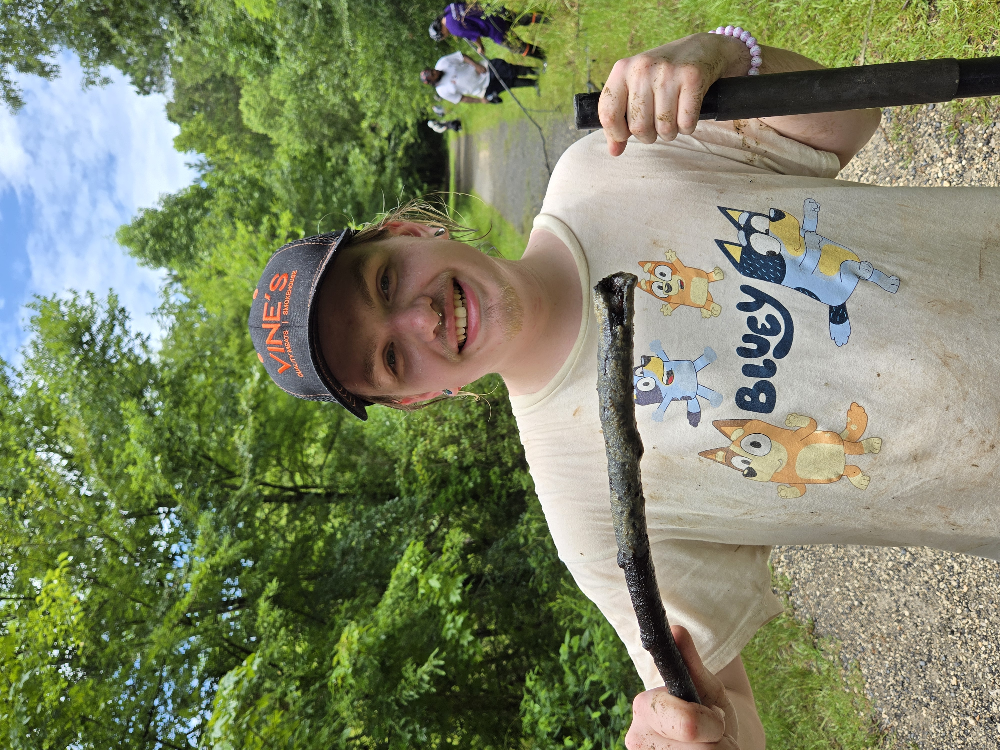
Jesse Mehaffey
Sediment Microscopy, Spring 2025 -
“Hello! My name is
Jesse Mehaffey and I am a Pre-Engineering student who is focusing on
Biological Engineering. After I finish the Pre-Engineering program I
want to transfer to LSU and double major in Biological Engineering and
Applied Coastal and Environmental Science to reach my goal of being a
Coastal and Environmental Engineer so I can help save the Earth in any
way I can, engineering the path to a healthy future for people and for
the Earth. Fun fact about me, I hold an immense amount of completely
random knowledge in my head, so if you spend time with me, you’re bound
to learn something new!”
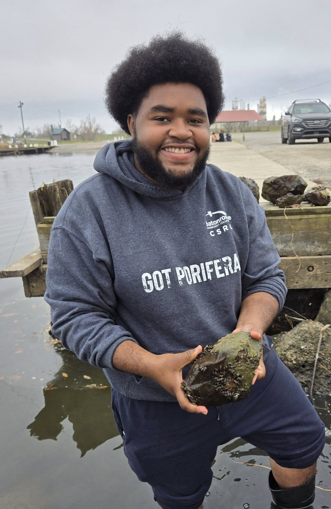
Geremiah
Perkins
Field Expert and Sediment Microscopy, Summer 2024 -
“My name is Geremiah Perkins, and I am majoring in Pre-Engineering
with a concentration in Environmental Engineering. My role in the lab is
sediment microscopy and assisting in sponge expeditions. I plan to
transfer to LSU to further my education and hopefully obtain a job in
water purification. A fun fact about me is that my favorite video game
is Persona 4.”
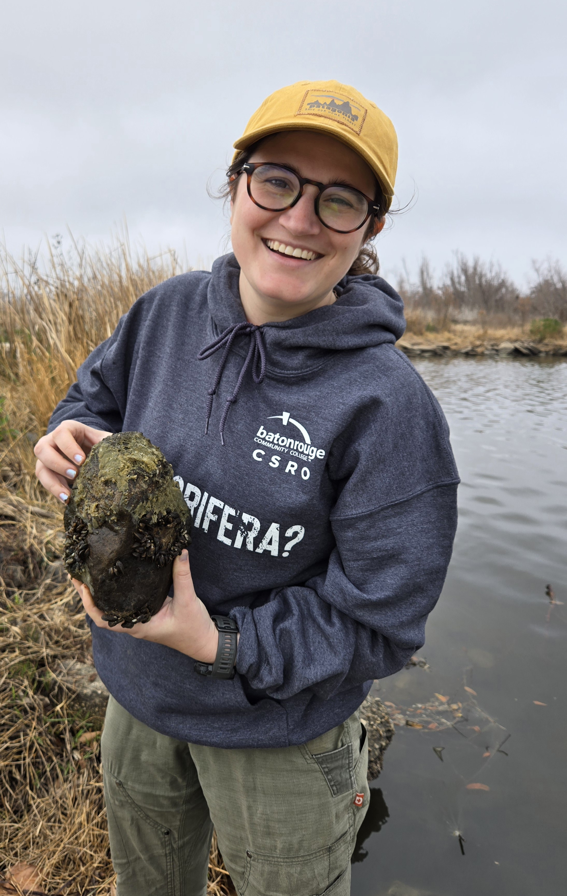
Mallory Rhymer
Field Expert and Water Quailty, Spring 2025 -
“My name is Mallory Rhymer. I am currently studying Biological
Science at Baton Rouge Community College with plans to transfer to a
four-year university. I am passionate about studying ecosystems and the
ways humans interact with nature. After completing my degree, I hope to
work in ecology or outdoor education, combining scientific research with
hands-on fieldwork. A fun fact about me is that I used to work as an
outdoor educator in the Shenandoah valley.”

Nicholas
Teegarden
Field Expert and Data Science, Summer 2024 -
“My name is Nicholas Teegarden, and I am grateful for the opportunity to
work with The Louisiana Freshwater Sponge Project. My role in the lab is
preparing spicule samples for identification. I am currently majoring in
General Science at BRCC and will be transferring to LSU’s College of the
Coast, majoring in Natural Resource Ecology and Management. Upon
graduation, I hope to work in an ecology lab, contributing to the
protection and conservation of Louisiana’s beautiful ecosystems.”
Undergraduate Student Researchers:
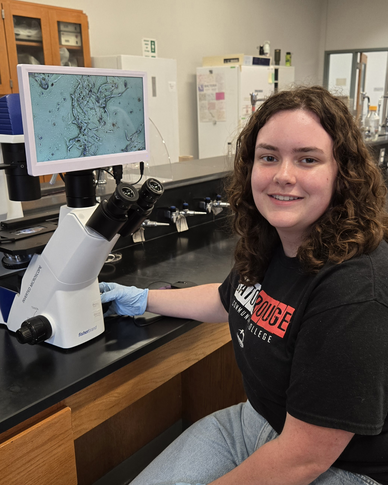
Abigail Curl
Scanning
Electron Microscopy, Summer 2025 -
“I am currently pursuing an
associate’s degree in Computer Science. After completing my degree, I
plan to transfer to Louisiana State University to earn a bachelor’s
degree in Computer Science.”
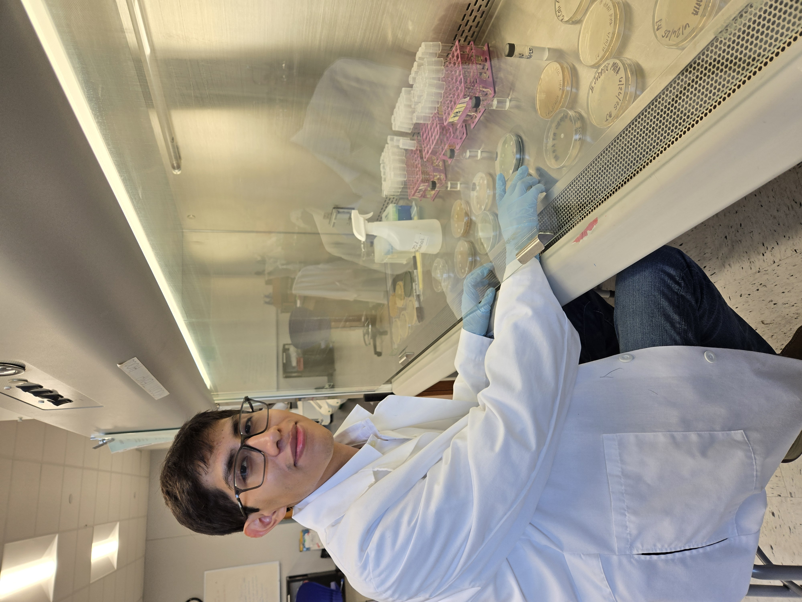
Alejandro Jose
Nanoplastic studies,
Summer 2025 -
“In the future, I plan to transfer to Tulane or
Cornell after obtaining my associate’s degree. I plan to complete my
undergraduate degree in Biochemistry or Biomedical Engineering. In the
near future, I plan to open my own dermatology clinics in my hometown
and Mexico City. During my free time, I enjoy reading books, playing
tennis, and traveling the world.”
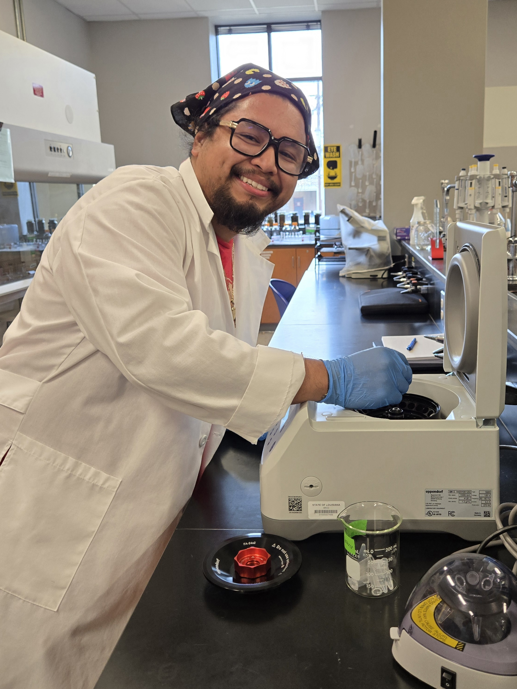
Oscar Mendoza
Sediment Processing and
molecular, Summer 2025 -
“I am working on an associate’s
degree in science at BBRC. After I get my associates, I plan to transfer
to LSU and pursue a bachelor’s in biological engineering. My dream job
after I get my bachelor’s would be to work with CRISPR and use it to
develop new therapies for genetic diseases, cancers, and infectious
diseases.”
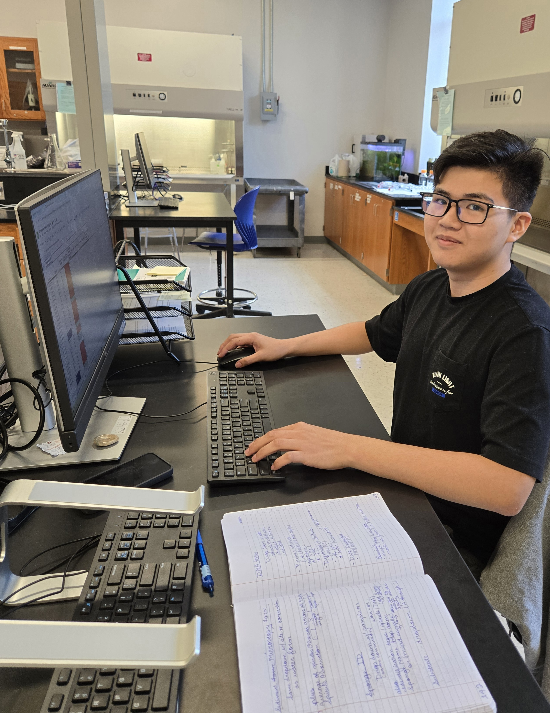
Loc
Nguyen
Data Science, Summer 2025 -
“I’m currently a
sophomore at Baton Rouge Community College. I’m excited about my
academic journey, as I’m planning to transfer to Louisiana State
University to pursue a degree in Data Science, with a particular focus
on Artificial Intelligence and Machine Learning. I love camping and
hiking, and spending time immersed in nature has truly made me
appreciate its beauty and tranquility. It’s a fantastic way to clear my
head and recharge, and I find a lot of peace in the quiet of the
wilderness.”
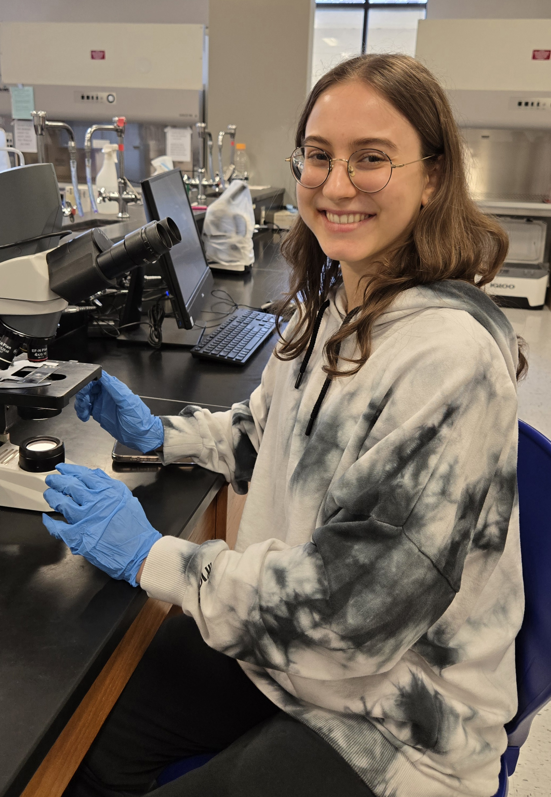
Selin Oral
Molecular, Summer 2025 -
“My current major at
BRCC is biological sciences. After I complete my credits here, I plan to
transfer to LSU to get my Bachelor degree in veterinary medicine. Fun
fact about me: I was a professional finswimmer for 15 years and won 2nd
and 3rd place medals in my home country, so I am interested in healthy
eating and cooking. Although I am no longer a finswimmer, I still enjoy
doing physical activities, especially yoga.”
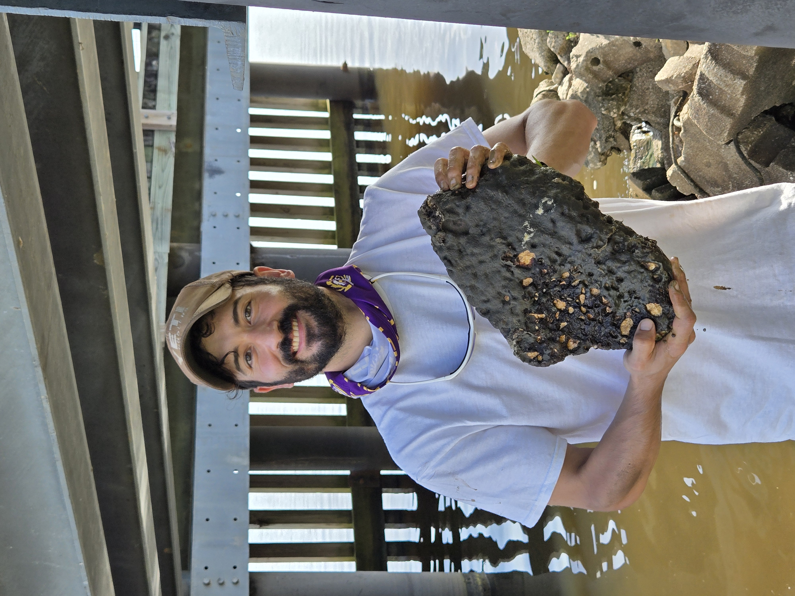
Michael Reulet
Field
expert and sponge ID microscopy, summer 2025 -
“I am currently
pursuing a degree in General Science Transfer with coursework in Plant
and soil Science focusing on Agriculture at Louisiana State University.
The NSF sponsored program at Baton Rouge Community College under
Dr. Miller has provided a wonderful opportunity for practical
application of concepts learned during my course of study as well as
participation in formal scientific research. I am also a member of the
Conservation Corps BREC.”
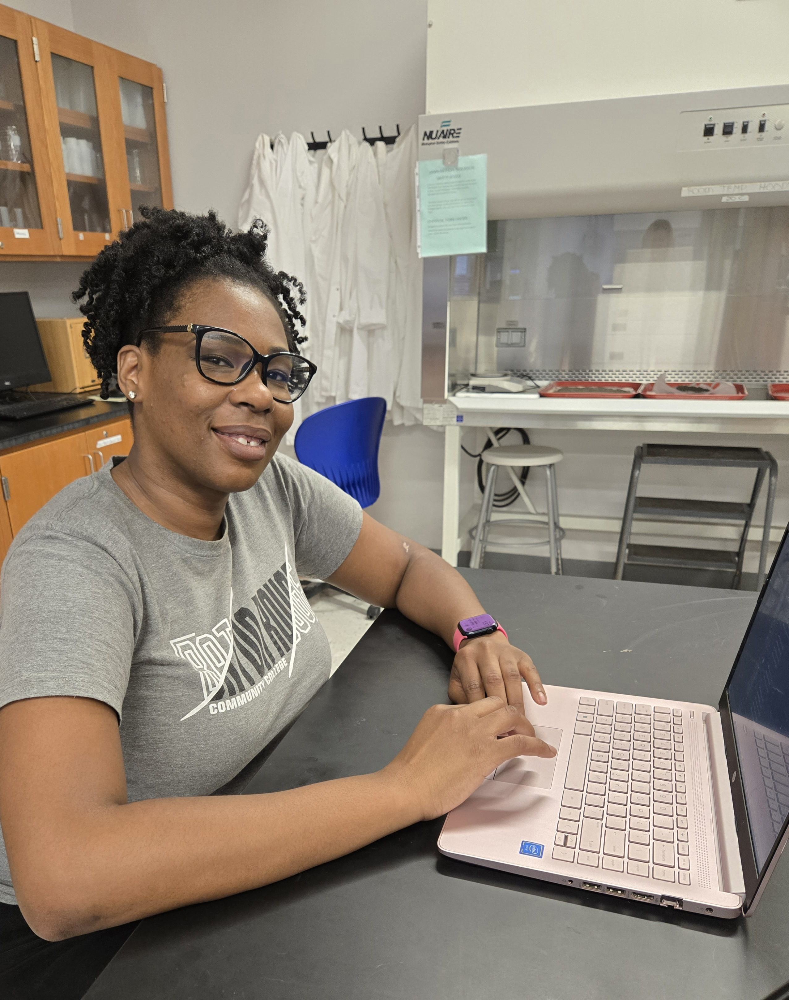
Brittany Tate
Data Science, Summer 2025
-
“I am a Computer Science major at BRCC. My role in the
Louisiana Freshwater Sponge Project is data science and analytics. After
receiving my Associate of Science degree, I plan to attend LSU’s College
of Engineering and Computer Science, to obtain my Bachelor’s of Science
in Computer Science with a concentration in Data Science and Analytics.
Afterwards, I plan to attend a JD/PhD program, to align data science and
law through interdisciplinary research.”
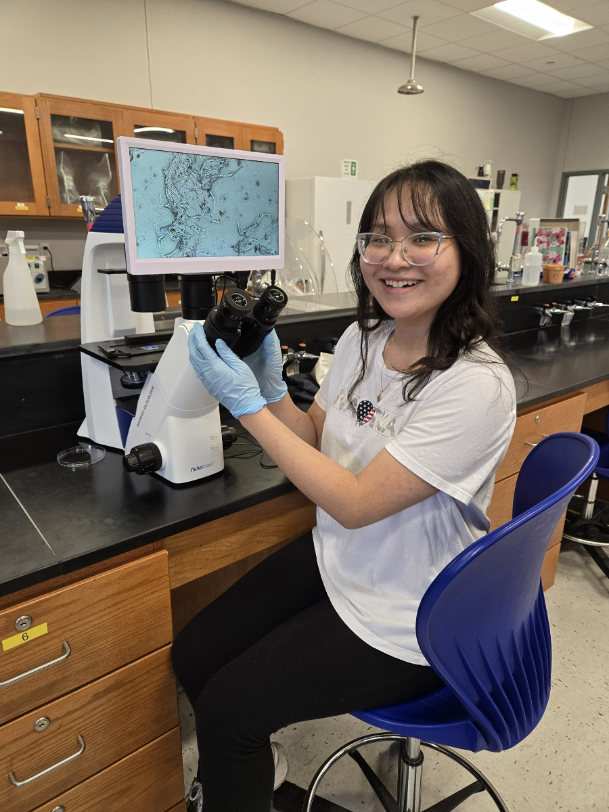
Tran Vi
Scanning Electron Microscopy
and Water Quality, Summer 2025 -
“I am currently majoring in
Physical Sciences at BRCC. I am a member of the Louisiana Sea Grant
Program, where I research the impact of heavy metals on water systems
and their contribution to the malformation of freshwater sponges. After
completing the Associate’s degree, I plan to transfer to LSU to earn a
Bachelor’s degree in a STEM field. In the future, I hope to gain
hands-on experience through both laboratory and field work as I want to
pursue a career in science.”
The Program for
Successful Employment (PSE) Interns: The Program for Successful
Employment (PSE) is a two-year vocational training program for adults
with autism and/or other cognitive differences. The program combines
academic and job skills training with externship opportunities in
regional businesses. Click here to learn more
information about the program.
Previous Research Mentors: these students trained
students on molecular techniques, sponge collection, and sponge
dissection. These students are always available for outreach
opportunities and are 100% dedicated to the Freshwater Sponge Survey,
even after they graduate.
Cooke, Kenzie M.: Summer 2021 -
Summer 2022
Dawes, Rose: Fall 2023 - Fall 2024
DiMaggio, Lisa:
Spring 2022-Summer 2025
Gemeinhardt, Sydney: Summer 2023 - Spring
2025
Glover, Tarry: Summer 2020 - Summer 2024
Gremillion,
Julia: Summer 2024 - Summer 2025
Heyer, Matthew: Fall 2019 - Summer
2021
Howard, Hayley: Summer 2022 - Summer 2025
Marvel,
Destiny: Summer 2023 - Spring 2025
Mcquirter, Marquis: Summer 2024
- Summer 2025
Mehrotra, Abhi: Summer 2021 - Fall 2024
Viator,
Ariel D.: Spring 2020 - Spring 2022
Vuong, Chau: Summer 2019 -
Spring 2021
Previous Undergraduate Student Researchers:
Ardoin, Elyzabeth: Spring 2023
Arroyo, Elsa: Summer 2020 -
Summer 2021
Bieller, Amori: Spring 2022 - Spring 2023
Boone,
Cristina: Summer 2020 - Spring 2021
Ciarlini, Duda: Fall 2021
Francois, Jaylon: Fall 2022
Henriquez, Axel: Spring 2022 - Summer
2022
Hill, Candace: Spring 2025
Johnson, Samuel J.: Fall 2021
- Spring 2022
Latore, Jada: Spring 2023
Lee, Britney: Fall
2021 - Spring 2022
Motsenbocker, Cameron: Summer 2023 - Fall 2023
Palmer, Tamieka: Summer 2023 - Summer 2024
Skelton, Raven:
Fall 2021 - Spring 2022
Smith, Charmaine: Summer 2019 - Spring 2020
White, Kendall: Spring 2022 - Fall 2022
Worley, Raven: Fall
2021 - Spring 2022
Previous High School Student Researchers: these
students participated in research at BRCC while completing their high
school degree.
Collins, Makayla (Helix Mentorship STEAM
Academy): Fall 2021 - Summer 2022
Calmes, Mason (Denham
Springs High School): Summer 2024
Poydras, Morgan (Glen Oaks Magnet
High School): Summer 2024
Previous Summer Research Interns: these students
dedicated their summer to studying sponges and contributing to the
Louisiana database.
Summer 2020:
Harris, Jonathan
Moore, Quinton
Summer 2019:
Curvin, Diamonique
Moore, Quinton
Santos, Daisy
Vanichchagorn-Howell, Cole
Previous Program for Successful Employment (PSE)
Interns:
Fuselier,Lauren: Summer 2023 - Fall 2023
Britten, Dylan: Summer 2023
Previous Administrative Assistant:
Kolniak, Camille: Spring 2024
Curriculum Developers: these students were involved
in developing the CURE curriculum for the implementation of the
Freshwater Sponge Survey in the second Biology Lab at BRCC.
Hanna, Lauren: Summer 2021
Hogan, Michael: Summer 2019
Lee,
Rebecca: Summer 2020
Roussel, Ori: Summer 2019